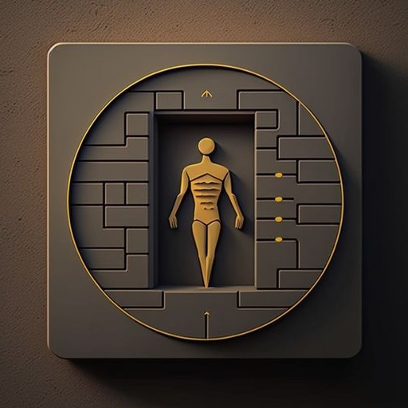

projects

keysniff reconstructs typed text from audio recordings with astonishing accuracy.

Electrocardiographic signal analysis, health status estimation using a self-built instrument, arduino uno and an AD8232 ECG sensor.

Farfler self-driving wheelchair hardware and software prototype under development.
achievements
languages
- Hungarian ðŸ‡ðŸ‡º [N]
- English 🇬🇧 [C1]
- German 🇩🇪 [B2]
- Russian 🇷🇺 [B2]
- Spanish 🇪🇸 [beginner]
- Japanese 🇯🇵 [beginner]